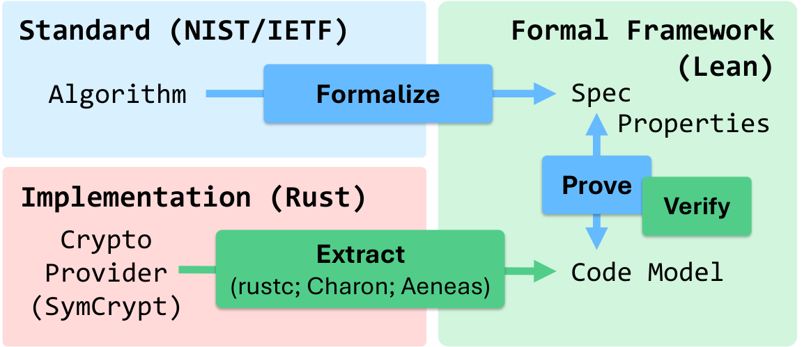

Scaling Verification of Cryptographic Software with Aeneas, Rust, and Lean
Son Ho, Cédric Fournet, Jonathan Protzenko, Michael Naehrig, Joshua Clune, Patrick Longa, Guillaume Boisseau, Fernando Leal Sánchez, Aymeric Fromherz, Antoine Delignat-Lavaud
Aeneas extracts pure Lean models of Rust cryptographic code, and AI agents write Lean-kernel-checked proofs of functional correctness and panic-freedom.
Abstract
We develop a new methodology for verifying cryptographic software. We target production code written in Rust for performance and system integration, rather than verification convenience. Rust's ownership discipline enables Aeneas to extract a pure model of this code in Lean, relieving us from low-level reasoning about pointer liveness and aliasing. Lean's extensibility lets us develop tactics and libraries that greatly simplify reasoning about extracted Rust code. We design and tune our toolchain to facilitate the use of AI. Agents autonomously write formal proofs, which are independently verified by the Lean kernel. Agents also assist in the formalization of cryptographic standards and platform-specific intrinsics, which still requires expert design and review. We apply our methodology to SymCrypt, Microsoft's cryptographic provider. We verify its implementations of algorithms such as SHA-3 and ML-KEM, which were ported from C to Rust. We also extend SymCrypt with experimental optimizations and implementations of algorithms such as FrodoKEM, ML-DSA, and HPKE to explore the scalability of writing, adapting, and verifying cryptographic code. Our 237 KLOC Lean development establishes safety, panic-freedom, and functional correctness of 16.7 KLOC of Rust code supporting post-quantum cipher suites for x86-64 and ARM platforms. Our evaluation shows that verified Rust can meet SymCrypt's performance, portability, deployment, and maintainability requirements.
Problem
Verified cryptographic libraries remain hard to integrate and maintain because existing toolchains generate special-purpose low-level code and require intense manual proof effort. The goal is to verify production Rust cryptographic code as actually written for performance and deployment.
Approach
Aeneas translates Rust MIR (via Charon/LLBC) into pure, side-effect-free Lean functions, removing pointer and aliasing reasoning. Cryptographic standards (NIST/IETF) are formalized in Lean using monadic do-notation and Mathlib libraries. Custom Lean tactics and libraries simplify reasoning about extracted Rust, and target-specific CPU intrinsics are modelled. AI agents autonomously write Lean proofs that are independently checked by the Lean kernel.

Figure 1: Overview of our verification methodology. Green arrows: automated tools; blue arrows: agentic (best effort).
Results
The 237 KLOC Lean development establishes safety, panic-freedom, and functional correctness of 16.7 KLOC of Rust in SymCrypt, covering SHA-3, ML-KEM, AES-GCM, ML-DSA, FrodoKEM, and HPKE for x86-64 and ARM. Agents generated 5.1k theorems and 125 KLOC of proofs; Opus 5 closed all 7 hard benchmark proofs, about 2.8x faster and 2.5x cheaper than Opus 4.8.
Component
Standard
Rust
Proofs
SHA-3 / SHAKE
FIPS 202
2,276
10,823
ML-KEM
FIPS 203
1,352
25,389
AES / AES-GCM
FIPS 197 / SP 800-38D
2,020
21,815
ML-DSA
FIPS 204
4,076
35,006
FrodoKEM
draft-frodokem-02
3,250
15,532
Verification effort by cryptographic component (specification and proof sizes)